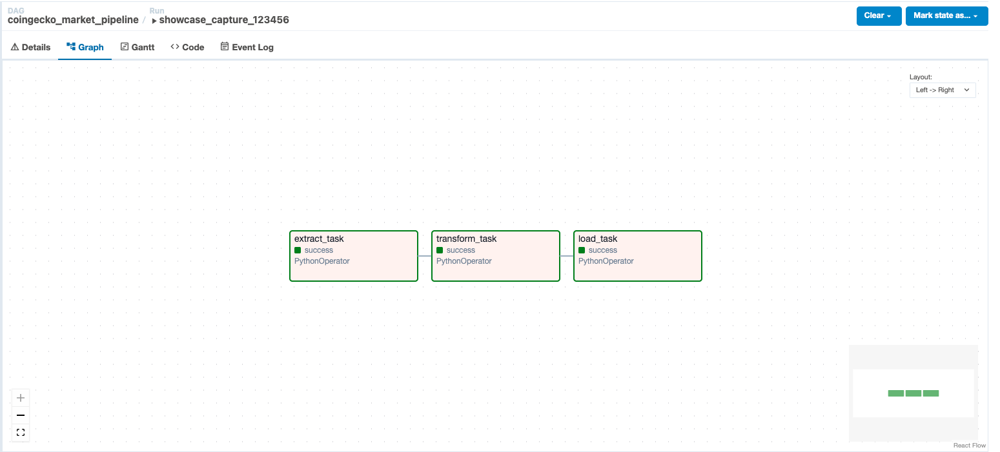

Source
CoinGecko API
Public market chart endpoint with optional API key.
Verified local Airflow run: success
A hiring-manager-friendly walkthrough of a production-style data pipeline: API extraction, raw landing, pandas transformation, PostgreSQL warehouse upserts, and Apache Airflow scheduling.
Run evidence
showcase_capture_123456

System Architecture
The stages stay intentionally separate so failures are observable, raw evidence is retained, and warehouse loads are repeatable.
Source
Public market chart endpoint with optional API key.
Landing
Timestamped immutable source payloads.
Transform
Typed cleaning, daily metrics, moving average.
Warehouse
Dimension/fact tables with idempotent upserts.
Visual Proof
The screenshot is captured from the local Airflow Graph View after a successful DAG run. The dashboard cards mirror warehouse counts from PostgreSQL.
Warehouse Dashboard
Apr 17 – May 17 · 31 days · PostgreSQL warehouse
Engineering Decisions
Pinned dependencies, `.env.example`, and ignored data zones make the project reproducible without leaking secrets. Skipping this step creates reviewer friction and makes environment drift hard to diagnose.
The extractor handles timeouts, rate limits, and transient API errors before writing timestamped raw JSON. Skipping this makes outages look like data quality issues and removes the audit trail.
Raw API arrays become typed, named, deduplicated rows with daily aggregates and a 7-day moving average. Skipping transformation pushes inconsistent business logic into every downstream query.
Dimension and fact tables use primary keys and `ON CONFLICT DO UPDATE`, so re-runs are safe. Blind appends would duplicate facts and inflate metrics.
Airflow separates the run into observable tasks with retries, scheduling, and logs. Without orchestration, a failed load can be hard to distinguish from a failed extraction.
Warehouse Schema Viewer
Primary key: asset_key
PK: asset_key, observed_at
PK: asset_key, metric_date
Verification Terminal
$ make run
raw_file=data/raw/coingecko_market_chart_20260517T210242Z.json
observations_file=data/processed/crypto_market_observations_20260517T210242Z.csv.gz
daily_metrics_file=data/processed/daily_crypto_market_metrics_20260517T210242Z.csv.gz
asset_key=1
observation_rows_upserted=721
daily_metric_rows_upserted=31
$ docker compose exec -T postgres psql -U warehouse_user -d crypto_warehouse -c "select count(*) as dim_assets from dim_crypto_asset;"
dim_assets
------------
1
$ docker compose exec -T postgres psql -U warehouse_user -d crypto_warehouse -c "select count(*) as observations from fact_crypto_market_observation;"
observations
--------------
721
$ docker compose exec -T postgres psql -U warehouse_user -d crypto_warehouse -c "select count(*) as daily_metrics from fact_daily_crypto_market_metric;"
daily_metrics
---------------
31